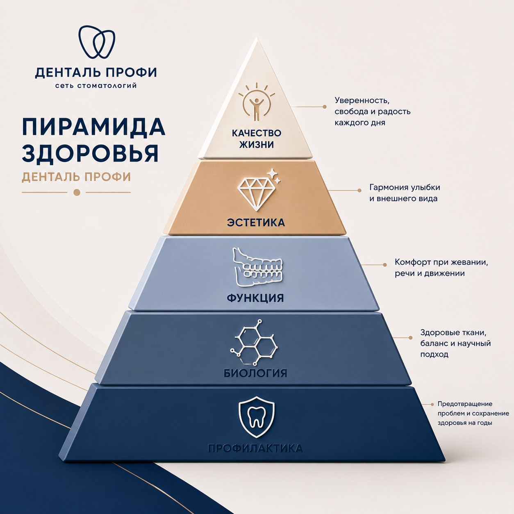
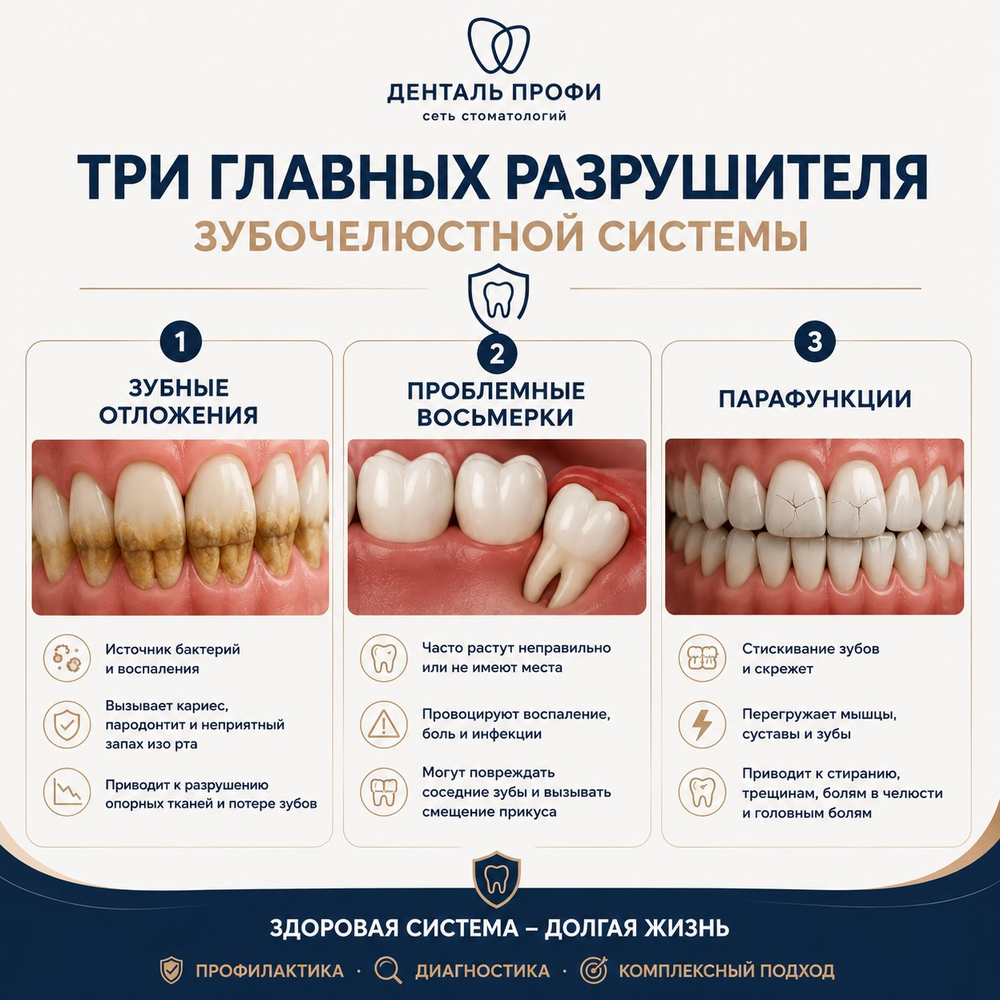

Базовый документ для врачей-ортопедов
Сначала врач учится думать. Только потом – работать руками.
Содержание
| 1. Зачем существует этот документ | |
|---|---|
| 2. Миссия Системы Денталь Профи | |
| 3. Что такое здоровая зубочелюстная система | |
| 4. Фундаментальные принципы работы | |
| 5. Принципы принятия клинических решений | |
| 6. Этапность лечения | |
| 7. Что такое качество результата | |
| 8. Запреты и границы компромисса | |
| 9. Каким должен быть врач Системы Денталь Профи | |
| 10. Кодекс врача и итоговый манифест |
1. Зачем существует этот документ
Этот документ не заменяет клинические протоколы, учебные модули, стандарты препарирования, фотопротокол или алгоритмы диагностики. Его задача – сформировать единый способ мышления врача.
В стоматологии можно знать много техник и при этом принимать слабые решения. Можно хорошо препарировать, но ошибаться в плане лечения. Можно красиво зафиксировать коронки, но не устранить причину разрушения системы. Поэтому в нашей системе качество начинается не с рук, а с мышления.
Врач Денталь Профи должен уметь видеть не отдельный зуб, а всю зубочелюстную систему. Он обязан понимать, как связаны зубы, пародонт, эндодонтия, мышцы, сустав, окклюзия, профилактика, эстетика, привычки пациента и долгосрочный прогноз. Только такой врач способен создавать результат, который сохраняется не на фотографии после фиксации, а в жизни пациента через 10, 20 и 30 лет.
Философия Денталь Профи проста: ортопед делает свою работу так, чтобы пациент как можно дольше жил с собственными зубами, стабильной функцией, спокойствием и уверенностью. Лечение не должно превращаться в бесконечный ремонт. Оно должно закрывать проблему системно и переводить пациента на уровень поддержания здоровья.
Мы убеждены:
- Организм умнее врача;
- Каждый зуб – важный орган;
- Функция определяет долговечность;
- Профилактика сильнее лечения;
- Мышление определяет профессионализм;
- Стандарты сильнее таланта;
- Время – главный экзаменатор врача.
Профессионализм – качество + скорость
2. Миссия Системы Денталь Профи
Система Денталь Профи существует для того, чтобы вывести стоматологию на более высокий уровень: клинический, образовательный, человеческий и системный. Мы хотим, чтобы стоматолог воспринимался не как ремесленник, который устраняет локальные дефекты, а как врач, способный комплексно мыслить, планировать, объяснять и отвечать за долгосрочный результат.
Для врача наша миссия – создать среду, где можно стать сильным профессионалом. Не случайно и не за счет личного таланта одного наставника, а через понятную систему: философию, стандарты, обучение, контроль качества, разборы случаев, командную работу и постоянное развитие.
Для пациента наша миссия – сохранить здоровье, функцию, красоту и качество жизни. Пациент покупает не пломбу, не коронку и не имплант. На глубоком уровне он покупает комфорт, спокойствие, уверенность, молодость, красивую улыбку, возможность нравиться себе в зеркале и не жить в постоянной тревоге за зубы.
Для российской стоматологии наша миссия – показать, что в России можно создавать системное лечение конкурентоспособного мирового уровня. Не отдельные красивые случаи, а воспроизводимую методологию, которую можно передавать врачам и масштабировать без потери стандартов.
Философское обещание пациенту звучит так: мы сделаем все возможное, чтобы сохранить ваши собственные зубы максимально долго, восстановить здоровье всей системы и дать вам состояние, в котором зубы перестают быть постоянной проблемой, а улыбка становится естественной частью жизни.
Хорошая ортопедия – это работа, к которой врач больше никогда не возвращается.
3. Что такое здоровая зубочелюстная система
Здоровая зубочелюстная система – это не просто отсутствие боли и кариеса. Это состояние, при котором все элементы работают согласованно: зубы, пародонт, костная ткань, эндодонт зубов, мышцы, сустав, окклюзия, жевательная эффективность и система профилактики.
Первый уровень здоровья – каждый зуб по отдельности. В зубах не должно быть активного кариеса. Пародонт должен быть здоровым. Десна не должна воспаляться. Кость вокруг зубов должна быть стабильной. Канальная система должна быть пролечена качественно, без очагов воспаления, кист и периодонтитов. Плохие восьмые зубы, создающие риск воспаления, скученности, кариеса или пародонтальных проблем, должны быть оценены и чаще всего удалены.
Второй уровень – функция. Зубы должны правильно смыкаться. Жевательная эффективность должна быть высокой. Боковые зубы должны нести основную нагрузку. Передние зубы участвуют в прикусе, но не должны быть перегружены. При боковых движениях должно формироваться правильное клыковое ведение. Контакты должны быть двухсторонними, одновременными и равномерными.
Третий уровень – мышцы и ВНЧС. Мышцы являются самым сильным компонентом системы. Если они перегружены, они будут разрушать зубы, коронки и реставрации. Сустав должен находиться в безопасном положении. Если не учитывать комплекс ВНЧС, можно получить нестабильный результат и необходимость переделывать работу.
Четвертый уровень – профилактика. У зубочелюстной системы есть три главных врага: зубные отложения, проблемные восьмерки и парафункции – бруксизм, клинчинг, гипертонус мышц. Задача врача – не только выявлять и лечить болезнь, но и снижать влияние этих врагов на протяжении всей жизни пациента.
Красота должна быть под защитой функции.

4. Фундаментальные принципы работы
Принцип 1. Лечим систему, а не отдельный зуб. Любое вмешательство должно оцениваться через влияние на всю зубочелюстную систему. Если мы лечим один зуб, но не понимаем окклюзию, мышцы, сустав, соседние зубы и прогноз, мы не управляем результатом.
Принцип 2. Свой зуб – биологический приоритет. Собственный зуб имеет периодонтальную связку, рецепторный аппарат и биологические механизмы защиты. Имплант – альтернативное решение, и он не равен собственному зубу. Каждый удаленный зуб – это необратимая потеря органа. Перед удалением врач обязан доказать самому себе, что исчерпал все разумные способы его сохранения.
Принцип 3. Все значимые этапы выполняются под увеличением. Без увеличения невозможно стабильно видеть детали, которые определяют качество: край реставрации, состояние тканей, качество гигиены, кариозные дефекты, эндодонтические нюансы, прилегание конструкций. Увеличение – не украшение, а стандарт мышления и контроля.
Принцип 4. Функция важнее эстетики. Красивая работа без правильной функции не является качественной. Если не восстановить жевание, высоту прикуса, клыковое ведение, защиту передних зубов и физиологичную работу мышц, эстетика начнет разрушаться.
Принцип 5. Профилактика сильнее лечения. Хороший врач не только лечит, но и строит систему, при которой пациент приходит на профилактику, гигиену, контроль и мониторинг. Идеальный пациент через 10 лет после лечения не живет у стоматолога. Он живет обычной жизнью и приходит только поддерживать результат.
Принцип 6. Этапность сильнее желания ускорить процесс. Нельзя начинать ортопедию без диагностики, плана и санации. Нельзя ставить красоту на нездоровые зубы. Нельзя перескакивать через подготовку тканей, эндодонтию, пародонтологию, хирургию, ортодонтию или гнатологию, если они необходимы.
Принцип 7. Стандарты сильнее таланта. Талант врача важен, но система не может держаться на таланте. Стабильное качество появляется тогда, когда каждый врач работает по понятным критериям, проходит контроль, умеет объяснить свое решение и готов сверять личное мнение со стандартом.
Принцип 8. Команда сильнее одного врача. Комплексная реабилитация невозможна в одиночку. Врач-ортопед должен уважать работу терапевта, гигиениста, хирурга, ортодонта, ассистента, координатора и администратора. Один в поле не воин. Сильный результат создает команда.
Думайте о том, как сохранить качество жизни пациента на долгие годы
5. Принципы принятия клинических решений
Каждое решение врача Денталь Профи проходит через фильтры. Эти фильтры позволяют отличить правильное решение от удобного, быстрое – от надежного, красивое – от действительно качественного.
Фильтр 1. Сохраняем ли мы биологию? Перед удалением зуба врач обязан ответить: можно ли сохранить этот зуб с приемлемым прогнозом? Есть ли возможность перелечить каналы, восстановить ткани, стабилизировать пародонт, защитить зуб ортопедически? Удаление допустимо не потому, что так проще, а потому что сохранение стало биологически или прогностически слабым решением.
Фильтр 2. Устраняем ли мы причину? Если зубы сильно разрушаются, нельзя просто поставить новые “красивые” коронки. Нужно понять причину: заниженный прикус, парафункция, перегрузка мышц, отсутствие клыкового ведения, проблемы с ВНЧС, плохая гигиена, неправильные контакты. Лечение последствий без работы с причиной – это отсроченная переделка.
Фильтр 3. Улучшаем ли мы функцию? Любое ортопедическое решение должно усиливать жевательную эффективность, стабильность окклюзии, защиту передних зубов, физиологичную работу мышц и безопасность сустава. Если функция не улучшена, эстетика не имеет прочного фундамента.
Фильтр 4. Сохраняется ли этапность? Если пациент хочет быстрее, врач не должен ломать логику лечения. Желание пациента важно, но оно не может отменять медицинскую последовательность. Диагностика, план, гигиена, санация, хирургия, ортодонтия, гнатология и ортопедия должны идти в правильной логике конкретного случая.
Фильтр 5. Можно ли будет гордиться этим решением через 20 лет? В системе Денталь Профи 10 лет – это только начало оценки. Мы ориентируемся на 20–30-летний прогноз. Если решение выглядит эффектно сейчас, но создает высокий риск разрушения, воспаления, перегрузки или переделки, оно не соответствует системе.
Фильтр 6. Сделал(а) бы я так себе или близкому человеку? Этот вопрос отрезвляет. Если врач не готов рекомендовать решение своему близкому, он не должен предлагать его пациенту как оптимальное. Коммерческая выгода, скорость и удобство не могут быть выше клинической честности.
Фильтр 7. Соответствует ли решение стандартам? Если врач отступает от стандарта, он обязан обосновать это клинически, показать, почему в данном случае отступление улучшает результат, и быть готовым обсудить решение с наставником или командой.
В любой спорной ситуации задавай вопрос: «Что бы я делал(а) своему близкому человеку?»
6. Этапность лечения
Этапность – один из главных инструментов долгосрочного качества. Ошибка в последовательности может разрушить даже технически хорошую работу. Поэтому врач Денталь Профи обязан мыслить маршрутом пациента, а не отдельной процедурой.
Первый этап – диагностика. Без диагностики нельзя начинать системное лечение. Врач собирает данные, оценивает зубы, пародонт, эндодонтию, окклюзию, мышцы, сустав, эстетику, привычки, риски и ожидания пациента. Диагностика должна дать основу для плана, а не быть формальностью.
Второй этап – план лечения. План должен быть понятен врачу, команде и пациенту. Он должен показывать не только что лечить, но и почему именно так, в какой последовательности, с каким прогнозом и какие риски есть при отказе от этапов. Только после плана лечения можно посчитать и огласить финансовую составляющую.
Третий этап – профессиональная гигиена и профилактическая подготовка. Система начинается с чистой среды. Гигиена под увеличением, обучение домашнему уходу, контроль зубных отложений, флоссинг, рекомендации по питанию и регулярная профилактика – это не второстепенная часть лечения. Это фундамент долговечности.
Четвертый этап – санация. Кариес, воспаление, эндодонтические проблемы, дефекты реставраций и очаги инфекции должны быть устранены до финальной ортопедии. Нельзя строить долгосрочную работу на воспаленной или нестабильной основе.
Пятый этап – хирургия и удаление безнадежных или рискованных зубов. Проблемные восьмерки и зубы с плохим прогнозом должны быть оценены не эмоционально, а системно. Цель хирургии – подготовить здоровую, прогнозируемую базу для дальнейших этапов.
Шестой этап – ортодонтия при наличии показаний. Если положение зубов мешает функции, эстетике, гигиене или качественному протезированию, ортодонтия становится частью комплексного плана. Пропуск ортодонтии там, где она нужна, особенно у молодых пациентов, часто приводит к компромиссной ортопедии.
Седьмой этап – работа с функцией, мышцами и суставом. При стираемости, снижении высоты прикуса, мышечном напряжении и признаках дисфункции врач не имеет права игнорировать гнатологический компонент. Правильная высота прикуса, расслабление мышц и безопасное положение сустава определяют стабильность ортопедии.
Восьмой этап – ортопедическая реабилитация. Протезирование находится в конце логики. Коронки, виниры и другие конструкции должны завершать подготовленную систему, а не маскировать нерешенные проблемы.
Девятый этап – поддержание. После завершения лечения пациент переходит в систему профилактики: регулярная гигиена, контроль прикуса, мониторинг тканей, коррекция капп и контроль парафункций. Без поддержки даже хорошая работа со временем теряет прогноз.
Чем лучше ортопед отработал на всех этапах, тем приятнее вознаграждение в конце

7. Что такое качество результата*
Качество лечения в Денталь Профи не определяется только фотографией “после”. Фотография может быть красивой, но она не показывает эндодонтию, пародонт, сустав, мышцы, контакты, гигиену, прогноз и состояние через годы. Поэтому качество для нас – это совокупность критериев.
Биологическое качество: нет активного кариеса, воспаления, кист, периодонтитов и хронических очагов инфекции. Десна здоровая. Пародонт стабилен. Кость вокруг зубов и имплантов контролируема. Каналы пролечены качественно, нет периодонтальных процессов. Края реставраций и коронок не создают воспаления.
Функциональное качество: есть двухсторонний равномерный одновременный контакт справа и слева в физиологически комфортном положении нижней челюсти. Боковые зубы несут основную нагрузку. Передние зубы защищены от перегрузки. Клыковое ведение работает. Жевательная эффективность высокая. Прикус не плоский и не заниженный. Высота восстановлена там, где это необходимо.
Мышечно-суставное качество: мышцы не находятся в гипертонусе. Мышцы находятся в физиологически нормальном состоянии. Пациент не разрушает работу парафункцией без контроля. ВНЧС находится в безопасной позиции. Решение не создает предпосылок к ускоренному износу сустава и необходимости переделывать прикус.
Техническое качество: работа выполнена под увеличением. Прилегание коронок и виниров качественное. Контакты стабильные. Материалы выбраны с учетом зоны нагрузки: прочность там, где нужна прочность, эстетика там, где нужна эстетика, и всегда – прогнозируемость.
Эстетическое качество: форма, цвет, объем, линия улыбки и характер зубов подходят человеку. Улыбка не просто белая, а естественная, уместная и усиливающая внешний вид. Эстетика должна делать пациента увереннее, но не разрушать функцию.
Поведенческое качество: пациент понимает, что получил, как это поддерживать и почему профилактика обязательна. Он умеет чистить, приходит на гигиену, контролирует риски, использует каппу при необходимости и не воспринимает завершение ортопедии как конец ответственности.
Главный критерий качества – не день фиксации. Главный критерий – состояние пациента через 10, 20 и 30 лет. Если через 10 лет пациент живет спокойно, улыбается, приходит на профилактику и не меняет систему заново, значит работа была сделана правильно.
*Полный список стандартов в документе «Стандарты качества системы Денталь Профи»
8. Запреты и границы компромисса
В системе Денталь Профи есть решения, которые нельзя принимать даже под давлением пациента, сроков, бюджета или желания сделать быстрее. Эти запреты защищают врача, пациента и репутацию системы.
Запрещено начинать комплексное лечение без диагностики и плана. Без плана врач реагирует на симптомы, а не управляет системой.
Запрещено начинать финальную ортопедию без санации. Нельзя ставить коронки и виниры поверх нерешенного воспаления, кариеса, плохой гигиены и нестабильных тканей.
Запрещено удалять сохраняемые зубы только потому, что пациент просит или так проще. All-on-4 и All-on-6 допустимы только при реальных показаниях, когда зубы безнадежны и зубосохраняющий подход уже не дает хорошего прогноза.
Запрещено жертвовать функцией ради эстетики. Если красивые виниры разрушатся из-за перегрузки, это не эстетическая стоматология, а отсроченная проблема.
Запрещено игнорировать мышцы, сустав и парафункции в комплексных случаях. Мышцы всегда выигрывают у материалов. Если их не учитывать, они будут ломать зубы, коронки и всю конструкцию.
Запрещено работать ниже стандарта. Если врач не может выполнить этап качественно, он должен учиться, просить помощи, передавать этап более опытному специалисту или обсуждать случай. Слабый компромисс не должен становиться нормой.
Граница между желанием пациента и правильным лечением проходит там, где желание начинает ухудшать прогноз. Врач обязан слышать пациента, но не обязан соглашаться с решением, которое повредит зубам, функции или долгосрочному результату.
Чем меньше врач идет на компромиссы, тем меньше проблем встречает в работе
9. Каким должен быть врач Системы Денталь Профи
Врач Денталь Профи принимает клинические решения, работает в команде и соблюдает стандарты.
Он мыслит системно. Видит зуб в контексте всей зубочелюстной системы. Не делает локальных решений, не понимая общего плана.
Он уважает диагностику и планирование. Не начинает лечение “по ходу”. Понимает, что правильный план часто важнее технического выполнения отдельного этапа.
Он умеет работать в команде. Сильный ортопед не противопоставляет себя терапевту, хирургу, ортодонту, гигиенисту и координатору. Он собирает результат вместе с ними.
Он честен с пациентом. Не обещает легкого пути там, где нужен комплексный подход. Не продает процедуру вместо решения. Объясняет причины, этапы, риски и ценность профилактики.
Он учится. Сначала врач учится создавать хорошие результаты по стандартам качества. Только после этого он работает над скоростью, эффективностью и воспроизводимостью. В нашей системе скорость не может идти раньше качества.
Он принимает ответственность. Если результат не соответствует стандарту, врач не прячет проблему. Он анализирует, исправляет, делает выводы и растет.
Он понимает, что профессия врача – это долгий путь. Школа ортопедов не выращивает быстрых исполнителей. Она формирует врачей, которые умеют думать, объяснять, планировать, лечить и отвечать за последствия своих решений.
Кто является хорошим врачом Денталь Профи?
Не тот, кто знает больше.
Не тот, кто быстрее работает.
Не тот, кто красивее делает.
А тот, кто принимает лучшие решения. И это самое сложное
Поэтому хороший врач учится всю жизнь
10. Кодекс врача и итоговый манифест
1. Я лечу не зуб, а человека и его зубочелюстную систему.
2. Я сохраняю собственные зубы пациента всегда, когда это возможно и прогнозируемо.
3. Я не начинаю комплексное лечение без диагностики, плана и понимания причин проблемы.
4. Я работаю под увеличением и считаю детали основой качества.
5. Я ставлю функцию выше эстетики, потому что долговечная красота невозможна без правильной функции.
6. Я соблюдаю этапность и не перескакиваю через подготовку ради скорости.
7. Я понимаю силу мышц, значение ВНЧС и риск парафункций.
8. Я считаю профилактику частью лечения, а не дополнительной услугой.
9. Я работаю в команде и уважаю вклад каждого специалиста.
10. Я оцениваю качество не днем фиксации, а состоянием пациента через годы.
Итоговый манифест Системы Денталь Профи: мы создаем стоматологию, в которой врач мыслит системно, работает по стандартам, сохраняет биологию, восстанавливает функцию, улучшает эстетику улыбки и отвечает за долгосрочный результат. Мы хотим, чтобы пациент после лечения не жил в стоматологии, а жил своей жизнью: спокойно, уверенно, красиво, с улыбкой и регулярной профилактикой.
Если работа прослужила человеку 10 лет – это только начало. Настоящий ориентир Денталь Профи – 20–30 лет здоровья, функции и качества жизни. Именно поэтому этот документ является началом обучения ортопедов Денталь Профи: сначала философия, затем диагностика, затем техника, затем скорость и масштабирование результата.
Практический фильтр для разбора клинического случая
| Вопрос | Правильный ориентир | Что делать при сомнении |
|---|---|---|
| Можно ли сохранить зуб? | Свой зуб имеет приоритет. | Обсудить эндодонтию, пародонт, феррул, прогноз. |
| Устранена ли причина? | Лечим причину, а не только последствия. | Вернуться к диагностике и анализу функции. |
| Улучшена ли функция? | Жевание, контакты, клыковое ведение, ВНЧС. | Пересмотреть окклюзию и высоту прикуса. |
| Соблюдена ли этапность? | Диагностика → план → гигиена → санация → подготовка → ортопедия. | Не начинать следующий этап. |
| Есть ли профилактическая система? | Результат должен поддерживаться годами. | Назначить гигиену, домашний уход, каппу, контроль. |
| Соответствует ли стандартам? | Стандарт выше привычки и скорости. | Показать случай наставнику. |
| Сделал(а) бы я это близкому? | Честность выше удобства. | Искать более сильное решение. |
Хорошая ортопедия требует планирования, подготовки и поддержания результата. Так мы сохраняем функцию, здоровье и уверенность пациента на долгий срок.